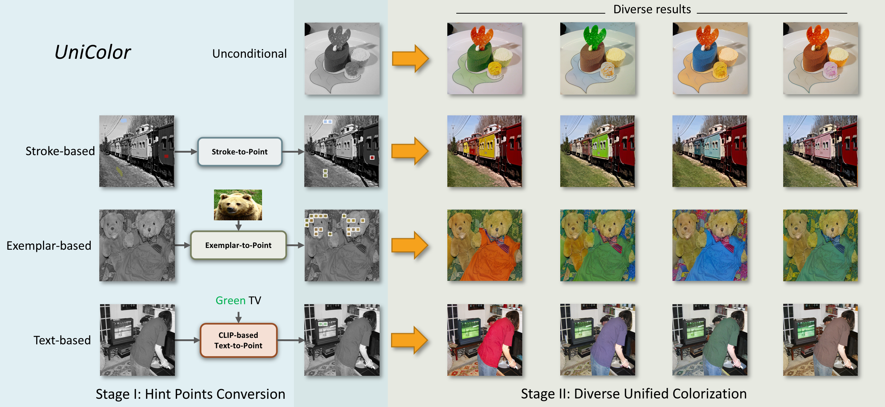

<h3>Two-Stage Method</h3>

Our framework consists of two stages. In the first stage, all different conditions (stroke, exemplar, and text) are converted to a common form of hint points. In the second stage, diverse results are generated automatically either from scratch or based on the condition of hint points.